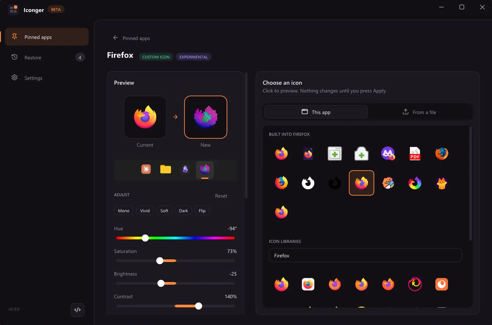
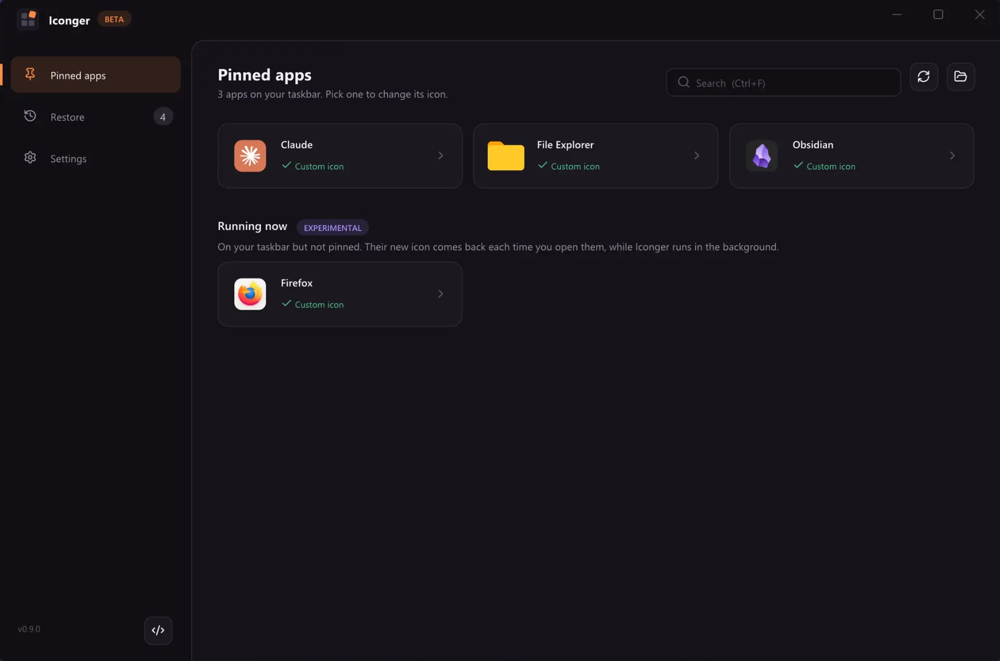
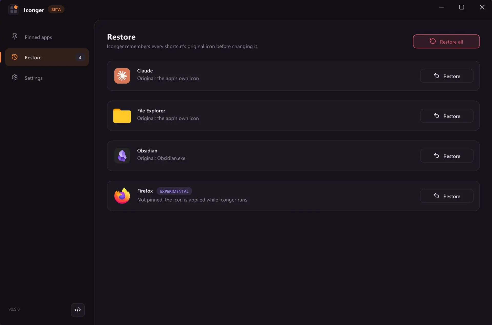
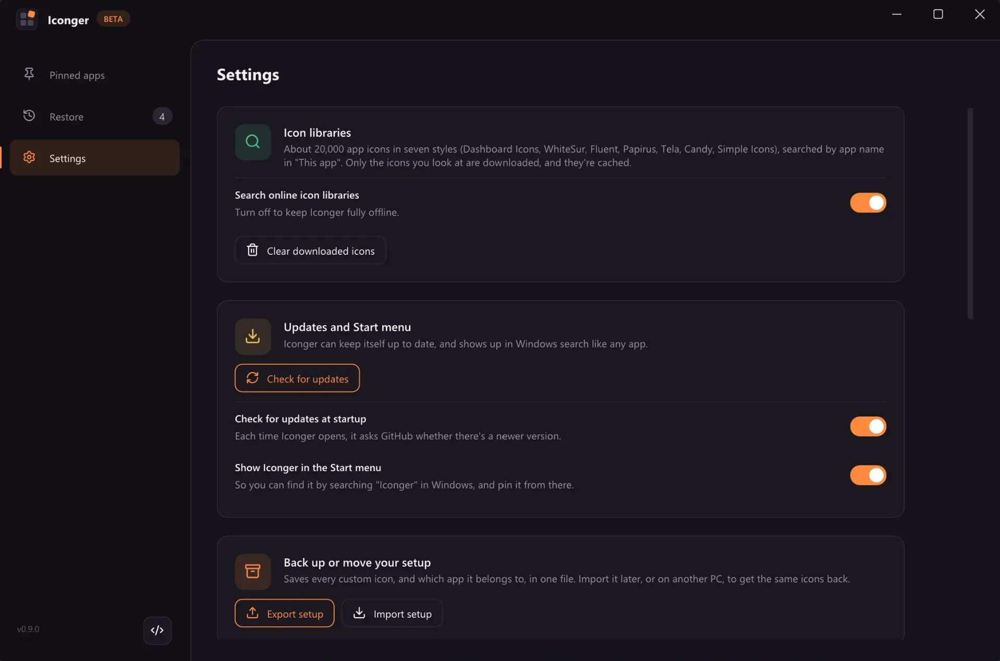

Adjust any icon
Hue, saturation, brightness, contrast and tint, or a one-click look. Even for the icon an app already has.
About 20,000 ready-made icons, or your own, for any app pinned to your taskbar. Free for Windows 10 and 11.

Iconger lists everything pinned to your taskbar, with the icon each one has now.
Matches from seven icon libraries, the app's own spare icons, or any file you have.
The taskbar shows it right away. The original is backed up first, so you can always go back.
Features
Hue, saturation, brightness, contrast and tint, or a one-click look. Even for the icon an app already has.
Put a logo on a square or round tile in any colour, or drop the tile and colour the logo.
Before the first change, exactly as it was. Restore one app or all of them from the Restore page.
Many apps ship spare icons (Firefox has about 15). Or drop in any file you like.
Export every custom icon to one file. Import it on another PC.
Asks before installing a new version, checks the download, and shows what's new.
Give a new icon to apps that only show on the taskbar while they run. Off until you turn it on in Settings.



Icon libraries
Iconger searches seven free icon libraries by the app's name. Only the icons you look at are downloaded.
Icons are made by the authors of each library and downloaded from them on demand, never bundled with Iconger. App logos are trademarks of their owners.
%LOCALAPPDATA%\Iconger.Back up your icons, move them to another PC, and give brand logos the background you want.
.iconger file with every custom icon inside it, so it also works on another PC. Import matches each app by its shortcut, then its program, then its name, backs up the originals as usual, and tells you what was applied and what was skipped (and why).Your backups and settings carry over.
Custom icons for apps that aren't pinned now show on the taskbar.
Your backups and settings carry over.
Custom icons for apps that aren't pinned (experimental), and a "What's new" screen.
Your backups and settings carry over.
A custom title bar.
Your backups and settings carry over.
Iconger now moves: animations everywhere, plus a few fixes.
Your backups and settings carry over.
A welcome screen, a Start menu entry, and automatic updates.
iconger.exe, the shortcut follows it the next time you open Iconger. You can remove it in Settings.Your backups and settings carry over.
Fixes for applied icons and Restore.
.exe or .dll could go blank later: they pointed straight into that file, so deleting it, or an app update moving it (Discord, some Electron apps), broke the taskbar icon. Every icon you apply is now saved as its own .ico in %LOCALAPPDATA%\Iconger\icons.%ProgramFiles%\...). Before, it restored an expanded copy of the path.%VARS% could keep showing the old icon. Fixed.--adjust before --open used to be ignored).Your backups and settings carry over.
Store / packaged apps are now supported.
Your backups and settings carry over.
Bug fix: the app could crash while adjusting an icon.
--icon current on the command line does the same as Customize current icon:iconger.exe --open "File Explorer" --icon current --adjust "hue=120"
Your backups and settings carry over.
Thousands of ready-made icons, and a colour editor.
Every app now gets ready-made icons under This app → Icon libraries, searched by the app's name. There's also a search box for anything else ("notes", "music", ...).
About 21,000 icons from seven free libraries, each in a different style:
For example, Obsidian had no alternatives before and now gets 7 different ones. Only the icons you look at are downloaded, and they're cached. Settings has a switch to keep Iconger completely offline, plus a button to clear the download cache.
After picking an icon, or with Customize current icon, you can change:
Double-click a slider to reset it. The preview and the taskbar strip update live; Apply saves it as a sharp multi-size icon.
--adjust "hue=40,saturation=140" (after --open and --icon).Your backups and settings carry over.
Small update: a simpler icon picker.
iconger.exe --open "Firefox" --icon "C:\icons\fox.png" iconger.exe --open "Firefox" --icon "C:\Program Files\Mozilla Firefox\firefox.exe,13"
Your backups and settings carry over.
Small update: new icons apply instantly.
Your backups and settings carry over.
Iconger gets its own look.
0.x.y while in beta (minor = updates, patch = small fixes). Older releases were renamed to v0.1.0 and v0.2.0.No behaviour changes since v0.2.0. Your backups and settings carry over.
A full rewrite: a new UI, a much more reliable core, and the bugs from 1.0 fixed.
%LOCALAPPDATA%\Iconger\iconsInitial beta release of Iconger - Windows pinned taskbar icon changer.
iconger.exe and open it. There's nothing to install..png, .jpg, .ico, .exe or .dll. Adjust its colours if you like.Microsoft Store apps keep their icon inside the app package, so Iconger makes a shortcut with your icon and walks you through swapping the pin. Iconger works on both Windows 10 and Windows 11.
Without Iconger, you can right-click the app on the taskbar, right-click its name, open Properties and click Change Icon. Windows only lets you pick an .ico file or an icon inside an .exe or .dll (not a .png or .jpg), it doesn't work for Store apps, and the taskbar sometimes needs an Explorer restart before it updates.
Open Iconger and go to Restore. Every app you changed is listed there: click Restore next to one app, or Restore all to undo everything at once. Iconger saves each original icon exactly as it was before its first change, so you always get the real original back.
Planning to stop using Iconger? Restore first. Your custom icons are files in Iconger's folder (%LOCALAPPDATA%\Iconger), so deleting that folder without restoring leaves those shortcuts without their icon.
Iconger is free and open source under the MIT license. All of its code is public on GitHub, and every release is built and tested there from that code.
It only changes the icon of your taskbar shortcuts, the same setting as a shortcut's Change Icon button, and never touches the apps' own files. It backs up every original icon first, needs no installer and no admin rights, and has no accounts, ads or tracking. It only goes online to download the icons you look at (from GitHub and the jsDelivr CDN) and to check GitHub for updates, and you can turn both off in Settings. An update is installed only after you say yes, and only if its size and SHA-256 checksum match.
One thing to know: Iconger isn't code-signed yet, so Windows SmartScreen may warn you the first time you open it. Click More info, then Run anyway.
FAQ
Yes. It's free and open source under the MIT license, with no ads, accounts or paid version.
No. It changes the icon of the app's taskbar shortcut, the same setting you'd find under the shortcut's Properties. The app's files stay exactly as they were.
Open the Restore page and restore one app, or all of them at once. Iconger backs up every original before its first change.
Yes, with one extra step. A Store app's icon is locked inside its package, so Iconger makes a shortcut with your icon that opens the same app, then walks you through swapping the pin. Windows 11 doesn't let programs pin to the taskbar themselves.
Usually. Every icon you apply is kept as its own copy, so it still works when an update moves or replaces the app. A few updaters rewrite their taskbar shortcut, which resets the icon. Then pick your icon again, it's still in Iconger.
Not by default. Only the experimental option for apps that aren't pinned keeps Iconger running, because it has to re-apply the icon each time those apps open. You'll see it in Task Manager, with no tray icon.
Windows sometimes holds on to an old icon. In Settings, restart Explorer in one click (open folders come back) and clear the icon cache if needed.
Restore your icons if you want the originals back, then delete iconger.exe and the folder %LOCALAPPDATA%\Iconger. If you turned on start with Windows, turn it off in Settings first.